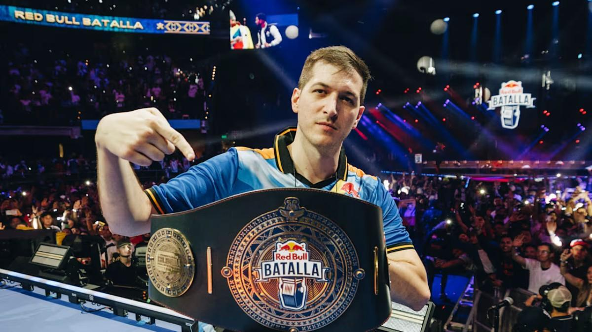
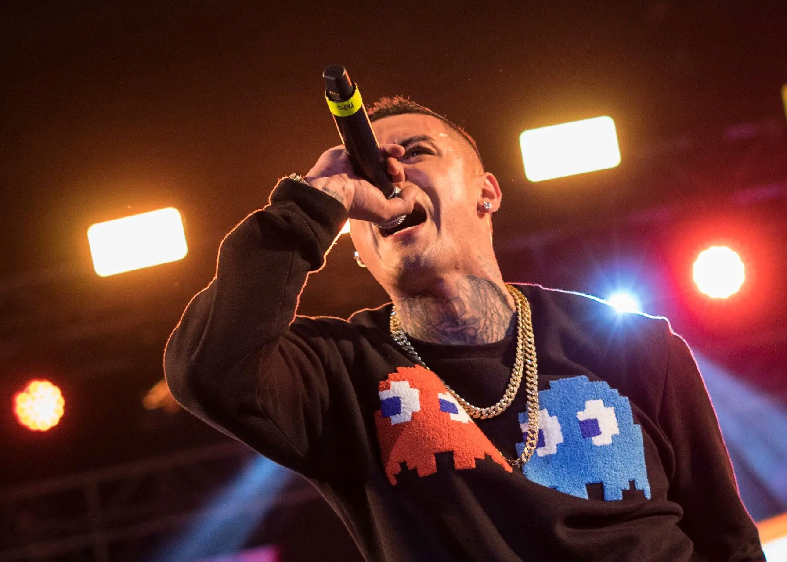

Its Origins
Freestyle is not new by any means. It started aroound the 1980s in the US during the early hip-hop culture.
However, its evolution to freestyle battles how we know them to be, didn't happen (or at least take off) in the US. Rather, freestyle battling found a home in Spain and Latin America, where rappers would start performing for small, yet enthusiastic crowds in parks and public spaces. This eventually led to freestyle battling having such a growth and impact that events are now streamed through various platforms and reach insane numbers of viewers.
Greatest Rappers

Aczino (Mexico) — Nicknamed "Freestyle's Devil" and often regarded as the best freestyler ever, Aczino boasts one of the biggest trophy collections ever. His strong personality, aggressive performance and strong punchlines characterize him.

Chuty (Spain) — Nicknamed "Freestyle's God", Chuty is the only person preventing Aczino from being, without a doubt, called the GOAT. Chuty is known for his versatility, quick thinking and rapid responses, leaving almost no second empty.

Dtoke (Argentina) — One of the first to jump on the scene, Dtoke is a pioneer in freestyle battling. He was International Champion in 2013 and competed in many more, inspiring hundreds, if not thousands to pick up a mic.

Kaiser (Chile) — Also one of the biggest pioneers in freestyle, Kaiser has nonstop represented Chile for more than a decade. Winning countless trophies and showing no signs of stopping anytime soon, Kaiser is for sure one of freestyle battling's pillars.